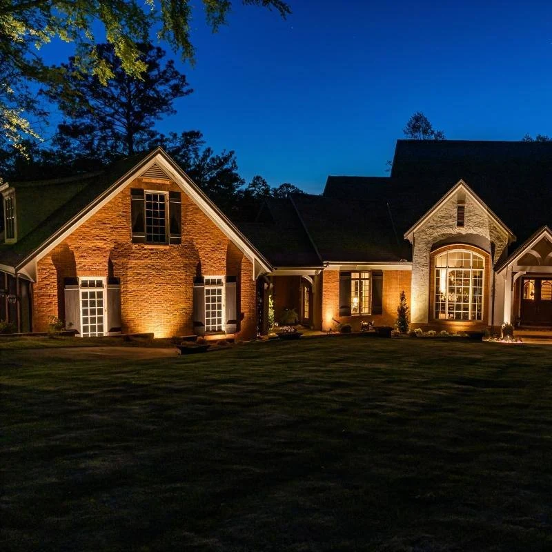

★★★★★
“Ty and his team put hydro mulch down in my front yard and they did an excellent job. The grass is looking awesome! Thanks guys.”Derrick Fawley

Home / Outdoor Lighting
Outdoor lighting for paths, patios, and entries
Low-voltage outdoor lighting for walkways, patios, entries, landscape beds, feature areas, safety, security, and nighttime curb appeal.
4.9★★★★★220+ Google reviewsGreat work at a fair price. They did what they said they were going to do, when they said they would do it.Richard Hansen
A lot of companies tell you what they are going to do. This company far exceeded their word.jon mercurio
Attention to detail was 2nd to none!Adam Raider
They did an excellent job and completed the same day. I would highly recommend them.Teresa Thompson
10/10 Company, the boys made my house look great. Customer Service is great, best deal on the market.Alejandro Urrea
Great work very accommodating and extremely professional will definitely have them do all my future work.Pete Detgen
Great, professional group of guys!Josh Johnson
They did a fantastic job for me. I will recommend them to colleagues.Dominic Urquiola
Fast and reliable. Ty did excellent work and very reasonable cost. I would not hesitate to suggest him to others.Larry Calcamuggio
Amazing service every time and prompt to all appointments.CJ Miller
Sound familiar?
What you get
 01
01What we light
Low-voltage lighting is planned around how you move through the property at night and what you want people to notice from the street.
 02
02Planned with the yard
When lighting is part of a bigger project, wire runs go in before pavers and plants, so nothing gets torn up later. It can also be added to an existing yard.
How we work
Homeowners need to know what happens next: Terramorph reviews the property, talks through the goal, explains practical options, and gives a clear estimate before work begins.
City, goal, frustration, timeline, range, and photos captured quickly.
Grade, water flow, access, soil, sun, materials, and maintenance expectations.
Clear options that connect budget to property improvement and long-term durability.
Professional install, cleanup, walkthrough, and follow-up.
Recent work


Reviews
“Ty and his team put hydro mulch down in my front yard and they did an excellent job. The grass is looking awesome! Thanks guys.”Derrick Fawley
“Amazing service every time and prompt to all appointments.”CJ Miller
“Fast and reliable. Ty did excellent work and very reasonable cost. I would not hesitate to suggest him to others. Thanks Ty!”Larry Calcamuggio
Questions homeowners ask
Still wondering about something? Call 419-873-6801, 7 a.m. to 8 p.m.
Yes. Terramorph handles low-voltage lighting for paths, patios, entries, landscape features, safety, security, and nighttime curb appeal.
Yes. Lighting often works best when planned with patios, walkways, beds, drainage, or a larger outdoor transformation.
Yes. Terramorph offers free estimates for landscape design, patios, drainage, lighting, lawn maintenance, seasonal cleanups, and related outdoor property work.
Terramorph serves Wood and Lucas County, with especially strong coverage in Perrysburg, Sylvania, Maumee, Monclova, Holland, Waterville, Whitehouse, and Ottawa Hills.
Terramorph at a glance
Terramorph LLC is a landscape design and build company based in Perrysburg, Ohio, founded by brothers Ty and Trent Lincoln. We handle outdoor lighting along with patios, drainage, landscape beds, lighting, lawn care, cleanups, and snow removal for homes and businesses across Wood and Lucas County. 4.9 stars from more than 220 Google reviews, BBB accredited, and estimates are free.
Free estimate
Free estimate
Send project details through the quote form, or call directly for urgent service questions and scheduling.
Call now or jump straight to the quote request form.